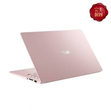
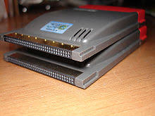

Pch 1 <<
Previous Next >> Word
Pch 17
Pch 17 1、Notebook Features and Components
原文:
Laptops, netbooks, and notebooks are computers that are specifically designed for mobile use, unlike standard desktop workstations that remain stationary. The first laptops were created in the 1970s, but only for very specialized uses. Widespread adoption of laptop computers did not occur until the 1990s, but today they are in use everywhere. Originally, there were distinctions between laptops, notebooks, and netbooks, but in our discussions the terms will be used interchangeably. The distinctions between laptops, notebooks, and netbooks can most often be attributed to marketing, and many of those differences have morphed as the industry continues to evolve. Laptops and notebooks have essentially become a reference to fully equipped mobile computers with hardware and software availability similar to standard desktops using full-instruction set processors (x86 or x64). Most netbooks and tablets generally use embedded processors, such as arm-based RISC or similar. For example, an Alienware R-18 or an HP Elite series laptop runs a full operating system and can support any software designed for a desktop PC. Apple Macbook Pro and Air laptops also run desktop-equivalent, full operating systems. Classifications for a laptop might include desktop replacement, gaming rig, multimedia, or business class. Notebooks, as a subset of laptops, can be further classified as business class, ultrabook, or ultra-portable. Generally, the biggest differences between laptops and notebooks are the physical dimensions and weight.
While most laptops and notebooks may share similar processor design and software with their desktop counterparts, netbooks and tablets are quite different, because netbooks and tablets use ARM or MIPS RISC processors. In netbooks and tablets expandability is usually limited to an external USB port and micro-SD card reader. Netbook as a name is increasingly being replaced with "Chromebook", which is available from most major computer manufacturers. The OS and software available is limited and specialized for these processors. Current models include the Android and Windows RT operating systems. With the power of cloud computing and software as a service (SaaS), netbooks and tablets are more enticing for users because of their lower cost, lightweight nature, and longer battery life. We will discuss tablets separately as a “mobile device” in another module.
Laptops are regular computers and are fully capable of completing all of the same functions as a desktop workstation. As stated above, the main difference is their portability and size. The main difference is their size: they are much smaller and more compact than a traditional workstation. For this reason, they are limited in their internal component replacement, upgrades, and expansion, and these upgrades are performed differently than in a traditional computer workstation. The main differences between laptops, notebooks, and netbooks are their size and the amount of processing power and capabilities they have. Laptops tend to have more internal storage, video capabilities, and processing power than the smaller netbooks. Because laptops and notebooks are smaller than their desktop counterparts, most laptops compromise on power to allow for mobility and smaller size. The compact size of these devices reduces their ability to provide cooling. Therefore, processing power is often sacrificed to minimize heat and maximize battery life.
In spite of these limitations for most laptops, most all manufacturers offer models with top of the line mobile processors, discrete graphics cards, improved cooling, and a comparable amount of RAM (currently up to 32 GB). With this kind of processing power and speed, laptops users may experience less than average battery life.
The most common type of memory used in laptop computers is the small outline dual in-line memory module (SODIMM). SODIMM is a good option for laptop computers, as it takes up a fraction of the space the dual in-line memory module (DIMM) of a typical desktop computer does.

翻譯:
筆記型電腦，上網本和筆記型電腦是專門為移動用途而設計的計算機，與保持靜止的標準台式機工作站不同。第一台筆記型電腦創建於1970年代，但僅用於非常專業的用途。直到1990年代，筆記型電腦才被廣泛採用，但是今天它們在世界各地都得到了使用。最初，筆記型電腦，筆記型電腦和上網本之間存在區別，但是在我們的討論中，這些術語可以互換使用。筆記型電腦，筆記型電腦和上網本之間的區別通常可以歸因於市場營銷，並且隨著行業的不斷發展，這些差異中的許多差異都在變化。筆記型電腦和筆記型電腦實質上已成為具有硬件和軟件可用性的功能齊全的移動計算機的參考，類似於使用全指令集處理器（x86或x64）的標準台式機。大多數上網本和平板電腦通常使用嵌入式處理器，例如基於Arm的RISC或類似處理器。例如，Alienware R-18或HP Elite系列筆記型電腦運行完整的操作系統，並且可以支持為台式PC設計的任何軟件。Apple Macbook Pro和Air筆記型電腦還運行與台式機等效的完整操作系統。筆記型電腦的分類可能包括台式機更換，遊戲機，多媒體或商務艙。筆記型電腦，作為筆記型電腦的子集，可以進一步分為商務類，超級本或超便攜式。通常，筆記型電腦和筆記型電腦之間的最大區別是物理尺寸和重量。
儘管大多數筆記型電腦和筆記型電腦可能與台式機共享相似的處理器設計和軟件，但上網本和平板電腦卻大不相同，因為上網本和平板電腦使用ARM或MIPS RISC處理器。在上網本和平板電腦中，可擴展性通常僅限於外部USB端口和micro-SD讀卡器。上網本的名稱正越來越多地由大多數主要計算機製造商提供的“ Chromebook”代替。可用的OS和軟件受限制並且專門針對這些處理器。當前的模型包括Android和Windows RT操作系統。借助雲計算和軟件即服務（SaaS）的強大功能，上網本和平板電腦具有較低的成本，輕巧的特性和更長的電池壽命，因此對用戶更具吸引力。我們將在另一個模塊中將平板電腦作為“移動設備”進行單獨討論。
筆記型電腦是普通計算機，完全能夠完成與台式機工作站相同的所有功能。如上所述，主要區別在於它們的可移植性和大小。它們的主要區別在於它們的大小：它們比傳統的工作站小得多，而且更緊湊。因此，它們在內部組件更換，升級和擴展方面受到限制，並且這些升級的執行方式與傳統計算機工作站不同。筆記型電腦，筆記型電腦和上網本之間的主要區別在於它們的大小以及它們具有的處理能力和功能量。筆記型電腦往往比較小的上網本具有更多的內部存儲，視頻功能和處理能力。由於筆記型電腦和筆記型電腦的尺寸小於台式機，大多數筆記型電腦會在功耗上有所妥協，以實現移動性和更小的尺寸。這些設備的緊湊尺寸降低了它們提供冷卻的能力。因此，通常犧牲處理能力以最小化熱量並最大化電池壽命。
儘管大多數筆記型電腦都有這些限制，但大多數所有製造商都提供配備頂級移動處理器，獨立顯卡，改進的散熱和相當數量的RAM（當前最高32 GB）的型號。通過這種處理能力和速度，筆記型電腦用戶可能會遇到比平均電池壽命短的情況。
便攜式計算機中最常用的內存類型是小型雙列直插式內存模塊（SODIMM）。SODIMM對於便攜式計算機來說是一個不錯的選擇，因為它僅佔台式計算機雙列直插式內存模塊（DIMM）的一小部分。
Pch 17、2 Installing and Configuring Laptop Hardware
原文:The first method that was developed to expand a laptop’s capabilities was the Personal Computer Memory Card International Association (PCMCIA) card. These cards were inserted into an expansion slot on the slide of the laptop and fit almost completely inside the casing of the machine. These cards originally came as PC cards (16-bit or 32-bit) or CardBus (32-bit) cards that fit into the associated slot. These cards were hot-swappable, meaning that the card could be ejected or inserted while the computer was still powered on. The idea of these cards was to provide a standard expansion port, similar to a PCI expansion slot on a traditional desktop computer. These cards had 68 pins in a two-row connector. These cards came in three types: type I, type II, and type III. Type I was used to provide additional memory and storage capabilities, but is now obsolete. Type II was used to provide additional input/output connections (like FireWire or USB), a network interface card, modem, or other such external devices/connectivity. Type II cards were only 5 mm thick, so they usually had to include a dongle to convert a flat proprietary connection to a standard connection like FireWire, RJ-45, or RJ-11. Type III was used as an upgraded version of the type II device and was thicker, reaching 10.5 mm in size, reducing or eliminating the need for a dongle. Cardbus, an improvement to the PC card, was a full 32-bit expansion card system and operated very similarly to the PC card. The CardBus was easily identified by looking at the edge of the expansion card, since it contained a golden edge where the connectors were.
翻譯:擴展筆記記型電腦功能的第一種方法是國際個人計算機存儲卡協會（PCMCIA）卡。這些卡已插入筆記型電腦滑軌上的擴展槽中，幾乎完全可以裝入計算機機箱內。這些卡最初是作為可插入相關插槽的PC卡（16位或32位）或CardBus（32位）卡來的。這些卡是可熱插拔的，這意味著可以在計算機仍打開電源時彈出或插入卡。這些卡的想法是提供一個標準擴展端口，類似於傳統台式計算機上的PCI擴展插槽。這些卡在兩行連接器中有68個引腳。這些卡分為三種類型：I型，II型和III型。類型I用於提供其他內存和存儲功能，但現在已過時。類型II用於提供其他輸入/輸出連接（如FireWire或USB），網絡接口卡，調製解調器或其他此類外部設備/連接性。II型卡只有5毫米厚，因此它們通常必須包含一個加密狗才能將扁平的專有連接轉換為FireWire，RJ-45或RJ-11等標準連接。III型用作II型設備的升級版，它更厚，達到10.5毫米，從而減少或消除了對加密狗的需求。Cardbus是PC卡的改進，它是一個完整的32位擴展卡系統，其操作與PC卡非常相似。通過查看擴展卡的邊緣，可以輕鬆識別CardBus，因為它包含連接器所在的金色邊緣。
Pch 17 3、Notebook Features
原文:
By pressing the FN key in combination with the notebook specific keys the user can access features such as increasing or decreasing screen brightness, toggling Wi-Fi and Bluetooth radios on and off, cycling through external monitor connections, adjusting the speaker volume, and other features depending on the specific laptop. Note in the image above that some of the letter and character keys have numbers written on them. That is because most laptops do not have room for a dedicated number pad and these keys provide that functionality when pressing the FN and NUM LOCK combination. If you are typing and notice numbers on the screen instead of letters, it may be the result of accidentally pressing that key sequence.
Another special feature of a laptop is the ability to connect an external monitor. Most desktop computers come standard with a single video output, whereas most laptops come with an external video port using HDMI, DisplayPort, DVI, or VGA. This allows you to duplicate, or extend, the internal display to the monitor to create a single continuous “larger” monitor. This is also advantageous when connecting a projector to the external port for presentations.
翻譯:
通過同時按下FN鍵和筆記本專用鍵，用戶可以使用以下功能：增加或降低屏幕亮度，打開和關閉Wi-Fi和藍牙無線電，通過外部顯示器連接循環，調整揚聲器的音量以及其他功能，具體取決於特定的筆記本電腦。請注意，在上圖中，某些字母和字符鍵上面寫有數字。這是因為大多數筆記本電腦沒有足夠的空間容納專用數字鍵盤，並且在按下FN和NUM LOCK組合鍵時，這些鍵可提供該功能。如果您在屏幕上鍵入並註意數字而不是字母，則可能是由於不小心按下該鍵序列而導致的。
筆記本電腦的另一個特殊功能是可以連接外部顯示器。大多數台式機標配單個視頻輸出，而大多數筆記本電腦均帶有使用HDMI，DisplayPort，DVI或VGA的外部視頻端口。這使您可以將內部顯示複製或擴展到監視器，以創建單個連續的“較大”監視器。將投影儀連接到外部端口進行演示時，這也是有利的。
Pch 1 <<
Previous Next >> Word